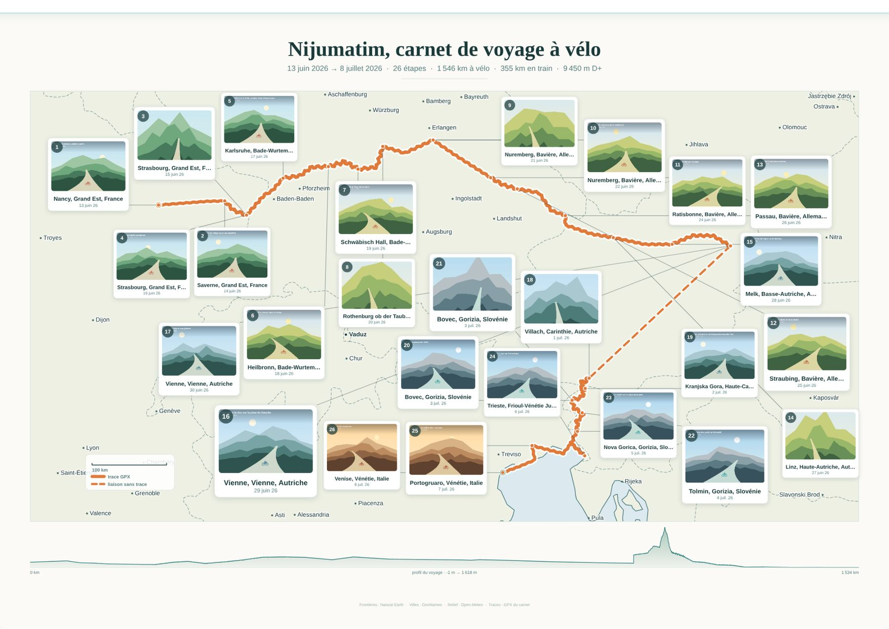
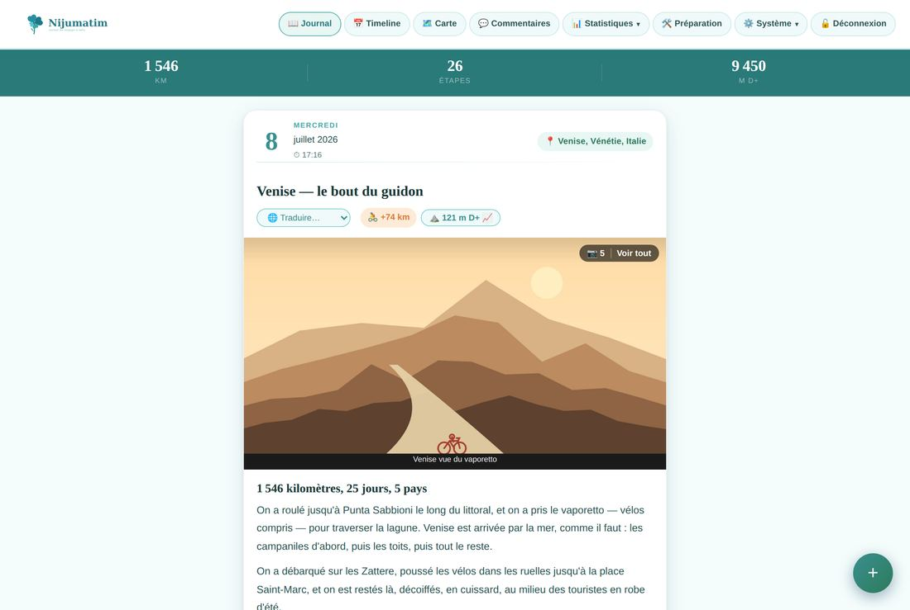
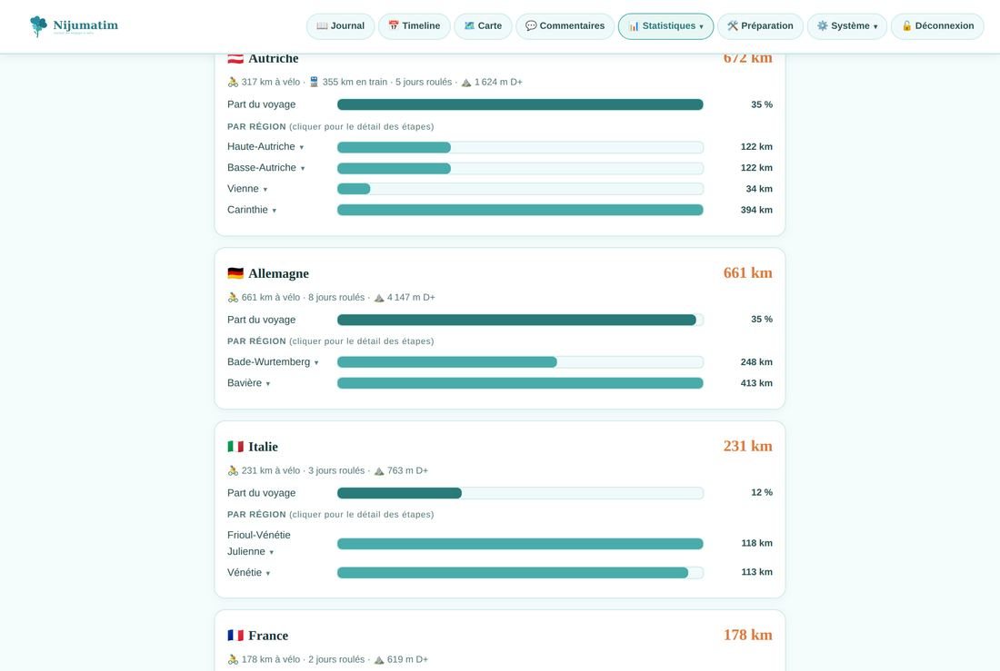
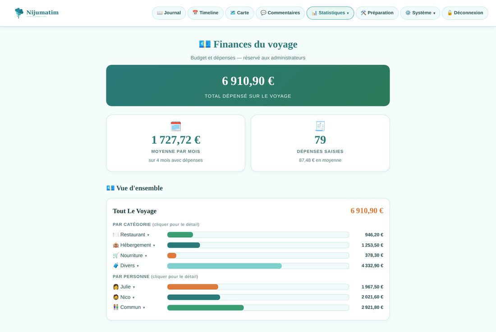
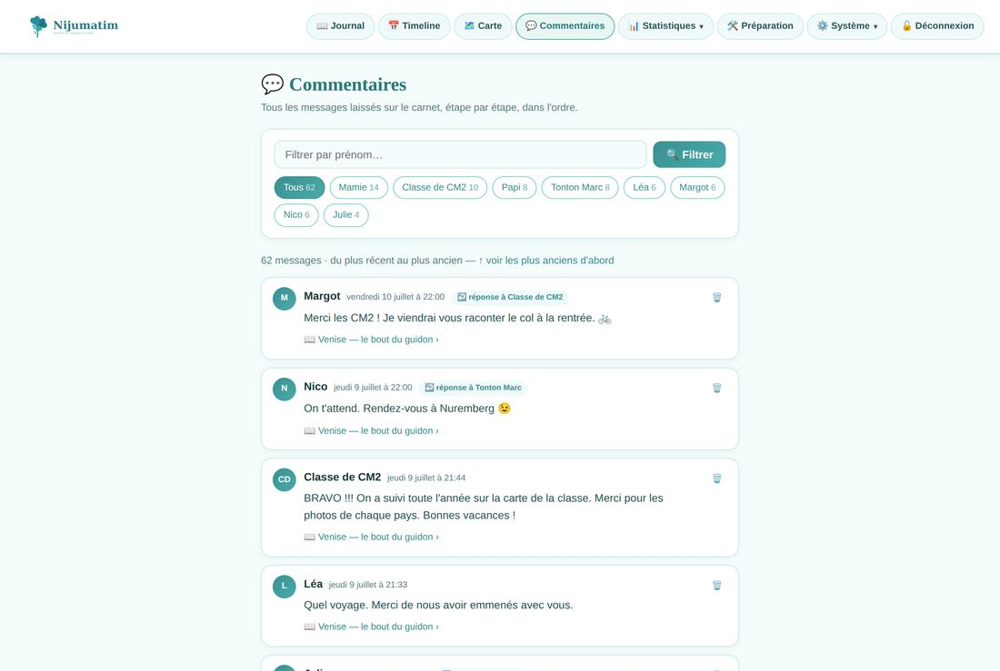
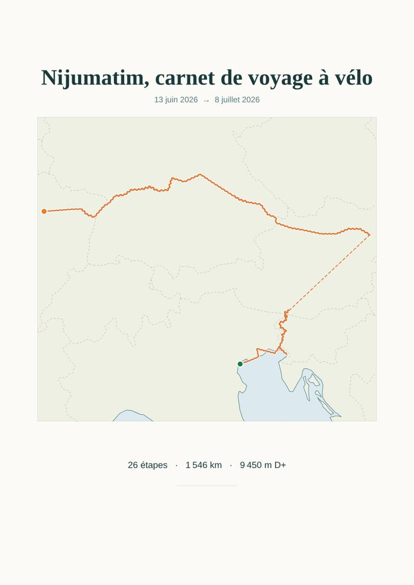
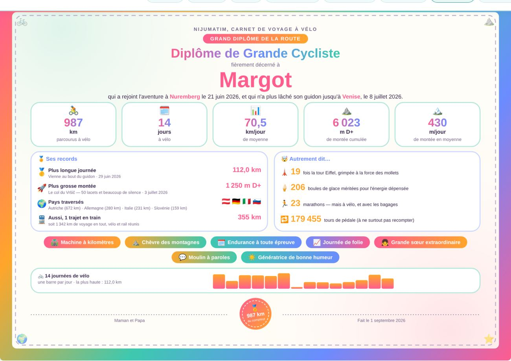

Carnet de voyage à vélo · à héberger soi-même
Un site de voyage tenu depuis le guidon : titre, récit, photos, position GPS et trace du jour, envoyés du téléphone sous la tente. Vos proches suivent sur une page qui leur est réservée, commentent, s'abonnent aux nouvelles. Tout tourne sur votre serveur, dans des fichiers JSON. Pas de base de données, pas de compte à créer, pas de mouchard.

Depuis le guidon
La page de saisie est faite pour un téléphone tenu d'une main : le mot de passe est retenu trente jours, la position se prend d'un bouton, les photos partent en lot.

Ce que la trace raconte
Deux pages réservées à l'administrateur. L'une compte les kilomètres, l'autre les euros — et aucune des deux ne demande de saisir quoi que ce soit en double.



Ceux qui suivent
Prénom et message, avec des réponses en fil. Une page rassemble tout le carnet, filtrable par personne — et le lien du filtre se partage tel quel.
Inscription à double confirmation, désabonnement en un clic, validation à la main si le courriel se perd. De votre côté, une alerte dès qu'un commentaire arrive.
Le carnet publie un flux : ceux qui vivent dans Feedly ou NetNewsWire n'ont rien à changer à leurs habitudes.
Après le retour
Trois pièces imprimables, dessinées par le carnet à partir de vos propres étapes : une affiche à encadrer, un livre à relier, un diplôme à offrir. Aperçu, impression et export PNG sont la même image, dessinée sur un canvas.


Essayer
Pour voir le carnet plein plutôt que vide : Nancy → Venise, un mois de selle fabriqué de toutes pièces par un script. Toutes les captures de cette page en sortent.
Profil du voyage de démonstration
1 546 km · 9 450 m D+ · 5 pays
3 articles de préparation et 26 étapes, avec jours de repos, étape sur deux jours et transfert en train.
Fabriquées à partir de points de passage réels : elles serpentent jusqu'à mesurer exactement la distance annoncée, et leur relief donne le dénivelé annoncé.
Dessinées à la volée, en portrait et en paysage, pour que l'affiche et le livre aient de quoi se mettre en page.
Ni tuiles, ni géocodage, ni interrogation d'altitude : le carnet de démonstration s'installe dans un train. npm run demo -- --clean le retire.
Chez vous
Aucune base à administrer, à migrer ou à sauvegarder de travers. Une archive ZIP complète se télécharge depuis le site, et se réinjecte de la même façon.
Un pour publier, un pour la page famille, un troisième facultatif pour un enfant qui écrit ses propres étapes. Rien de public par défaut.
En-têtes Helmet, jeton CSRF sur chaque formulaire, échappement des saisies, cookie de session httpOnly et secure, connexion limitée à dix essais par quart d'heure.
Le plus petit VPS suffit. Nginx en façade, Let's Encrypt pour le certificat, PM2 pour le garder allumé — la marche à suivre complète est dans le dépôt.